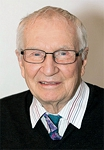
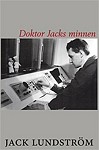
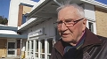

Jack Oskar Lundström
f.d. Överläkare och chefsläkare vid Skellefteå lasarett, landstingspolitiker.
| Född: | 1933-04-24 Skellefteå, Skellefteå sfs, Skellefteå stad. [1] |
|---|
| Vigsel: | 1956-06-16. [2] |
|---|
| Levde: | 1958 Målaren 2, Uppsala, Uppsala län. [2] |
|---|
| Levde: | 1961 Ugglan 6, Prästgårdsg 6, Skellefteå lfs, Skellefteå kn. [2] |
|---|
| Barn: |
|---|
| Maria Lundström (1959 - ) |
| Erik Lundström (1962 - ) |
| Eva Lundström (1963 - ) |
| Brita Lundsrtröm (1965 - ) |
| Karin Lundström (1970 - ) |
Noteringar
"Varje lasarett är en brokig, mystisk, hoppingivande, skräckinjagande och efterlängtad värld. Början till något nytt eller slutet på det gamla? Befriande skratt eller kvävd gråt?
Mitt ibland detta rör sig författaren hemtamt – ofta tryggt och leende, ibland skymd bakom narkosens barmhärtiga dimridå, inte sällan med blodfläckar på den vita rocken.
Men den djupa medkänslan och det äkta engagemanget finns där alltid som ett lugnande svar på patienters tysta frågor.
Och mitt i allt detta – humorn. Där skelleftebondskan är bästa medicinen – till och med för kissnödiga, franska patienter ...
Före detta överläkaren Jack Lundström, Skellefteå, har lagt stetoskopet på hyllan, men hans ovärderliga erfarenhet kommer aldrig att hamna där. Den här boken är hans gåva till framtiden och oss."
Larry Lundgren
Danskt band, 244 sid Utg. 18
ISBN: 978-91-87949-80-7
Pris: SEK 246.00
www.ordvisor.se/shopping/product_details.php?id=&product_id=741
-------------------------------------------------------------------
Doktor Jack ger ut en egen bok
En legendarisk läkarprofil i Skellefteå har skrivit ner sina minnen – Jack Lundström, snart 85 år.
Jack är en genuin skellefteson, känd för sitt engagemang, sin förmåga att lösa kniviga dilemman – och sin humor.
– Jag har haft glädjen att få arbeta med duktiga undersköterskor, sjuksköterskor och läkare. Och vi gjorde ett bra jobb, sammanfattar Jack Lundström sitt arbetsliv.
Om stafettläkare är dagens modell, så står Jack Lundström för motsatsen. I 40 år var han verksam vid Skellefteå lasarett. Han började som nybakad läkare 1959, vidareutbildade sig och blev specialist inom medicin, kirurgi och anestesi, med ständig jour i långa perioder. Chefsläkare och landstingsman dessutom – och far till fyra flickor och en son.
– Varför jag skrivit boken? För att barnen skulle få veta varför jag var borta så mycket under de här åren.
Robert Tedestedt
www.svt.se/nyheter/lokalt/vasterbotten/doktor-jack-ger-ut-en-egen-bok
Publicerad 30 april 2018 kl 18:16
Personhistoria
| Årtal | Ålder | Händelse |
|---|
| 1933 |
|
Födelse 1933-04-24 Skellefteå, Skellefteå sfs, Skellefteå stad [1] |
| 1933 |
5 mån |
Makan Gurli Vivi-Ann Pettersson föds 1933-09-25 Boliden, Skellefteå lfs, Skellefteå sn [3] |
| 1956 |
23 år |
Vigsel Gurli Vivi-Ann Pettersson 1956-06-16 [2] |
| 1958 |
|
Levde Gurli Vivi-Ann Pettersson 1958 Målaren 2, Uppsala, Uppsala län [2] |
| 1959 |
|
Dottern Maria Lundström föds 1959 Prästgårdsg 6, Skellefteå lfs, Skellefteå kn [2] |
| 1961 |
|
Levde Gurli Vivi-Ann Pettersson 1961 Ugglan 6, Prästgårdsg 6, Skellefteå lfs, Skellefteå kn [2] |
| 1962 |
|
Sonen Erik Lundström föds 1962 Skellefteå, Sankt Olovs fs, Skellefteå kn [4] |
| 1963 |
|
Dottern Eva Lundström föds 1963 Skellefteå, Sankt Olovs fs, Skellefteå kn [4] |
| 1965 |
|
Dottern Brita Lundsrtröm föds 1965 Skellefteå, Sankt Olovs fs, Skellefteå kn [4] |
| 1970 |
|
Dottern Karin Lundström föds 1970 Magistratsv 49 C, Lunds Allhelgona fs, Lunds kn [5] |
| 1981 |
48 år |
Modern Anna Eva Maria Lind dör 1981-12-23 Anderstorg 16, Skellefteå, Skellefteå lfs, Skellefteå kn [6] |
| 1984 |
51 år |
Fadern Oskar Johannes Lundström dör 1984-10-14 Lingonstigen 12 /Lundström/, Skellefteå, Sankt Olovs fs, Skellefteå kn [7] |
Dokument
Källor
| [1] | Skellefteå Sankt Olov (AC) CI:2 (1927-1936) 54/1933 Bild: 1080 Sida: 100 |
| |
| | |
| [2] | Mtl Sveriges befolkning 1960 |
| |
| | |
| [3] | SCB Födda AC Skellefteå lfs 350/1933 |
| |
| | |
| [4] | Mtl Sveriges befolkning 1975 |
| |
| | |
| [5] | Mtl Sveriges befolkning 1975, Mtl Malmöhus län 1971 |
| |
| | |
| [6] | RTB 82, SPAR 90, SDB7_02669677 |
| |
| | |
| [7] | RTB 84, SPAR 90, SDB7_02128793 |
| |
|
|  |
Jack Lundström, f. 1933. Läkarexamen 1962. Studier och praktik på universitetssjukhusen i Uppsala, Lund och Umeå. Verksam i Skellefteå hela eller del av varje år mellan 1959 och 1998.
Som förtroendevald har han arbetat med sjukvårdsfrågor på landstings- och riksnivå.
Böcker av författaren:
Doktor Jacks Minnen
|
| |
|  |
2018-04-30. Jack Lundström, fd. överläkare
Doktor Jacks minnen
Utgivningsår: 2018
|
| |
|  |
| 2018-04-30. Läkarlegenden Jack Lundström berättar om hur Skellefteå var nära att förlora sitt BB på sjuttiotalet. Foto: SVT |
|
{kind=link}
{kind=link}
{kind=link}